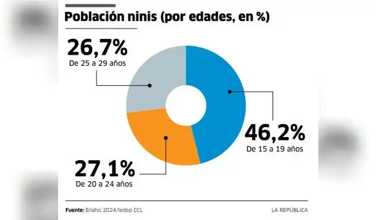
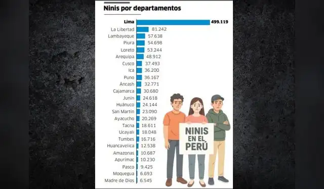

Los ‘ninis’ en Perú: una generación que queda fuera de las aulas y del trabajo
Cada vez más jóvenes enfrentan dificultades para continuar sus estudios o incorporarse al mercado laboral. El fenómeno de los llamados ‘ninis’ revela un problema estructural que va más allá de la falta de empleo.
Por Juan Sotomayor
Universidad Científica del Sur • Géneros de la Realidad
27 de septiembre de 2026
Lectura: 5 min • Fuentes oficiales
En el Perú, miles de jóvenes se encuentran en una situación particular: no estudian y tampoco tienen un empleo. A este grupo se le conoce popularmente como ‘ninis’, un término utilizado para describir a quienes están fuera tanto del sistema educativo como del mercado laboral.
Sin embargo, detrás de esta denominación existe una realidad mucho más compleja. No todos los jóvenes que no estudian ni trabajan se encuentran en la misma situación. Algunos buscan empleo sin conseguirlo, mientras que otros han abandonado sus estudios por dificultades económicas, responsabilidades familiares o falta de oportunidades.
Cuando estudiar y trabajar parecen estar fuera de alcance
El paso de la educación al empleo puede convertirse en una etapa difícil para muchos jóvenes. La falta de experiencia laboral previa, las exigencias desmedidas de las empresas y la urgencia de generar ingresos para subsistir pueden llevar a muchos a abandonar las aulas o aceptar empleos informales sin derechos laborales.
Según información del Instituto Nacional de Estadística e Informática (INEI), la población joven que no estudia ni trabaja representa una parte significativa de los jóvenes en edad de trabajar en el territorio nacional. El fenómeno también ha sido exhaustivamente analizado por organismos multilaterales como la Organización Internacional del Trabajo (OIT), que advierte sobre las crecientes dificultades que enfrentan las nuevas generaciones para acceder a empleos dignos y desarrollar una trayectoria laboral estable y formal.
No todos los ‘ninis’ están en la misma situación
Estar fuera de los estudios y del empleo no significa necesariamente que un joven no quiera trabajar o estudiar. Las razones son multifactoriales y suelen estar condicionadas por su entorno:
Altos costos de matrícula y manutención obligan a postergar estudios para atender responsabilidades de cuidado doméstico o crianza de familiares.
Las convocatorias exigen años de experiencia laboral previa a egresados recién titulados, cerrando la puerta al primer empleo formal.


¿Y qué son los ‘nininis’?
En los últimos años también ha comenzado a utilizarse de manera coloquial el término ‘nininis’ para referirse a aquellos jóvenes que no estudian, no trabajan y tampoco tienen planes inmediatos de hacerlo en el corto plazo.
"A diferencia de ‘nini’, ‘nininis’ no constituye una categoría estadística oficial. Se trata más bien de una expresión utilizada para enfatizar una situación de mayor desconexión con los estudios y el empleo."
La distinción resulta crucial porque detrás de las frías cifras existen realidades marcadamente divergentes: un joven que envía hojas de vida diariamente y busca activamente su primer empleo no comparte las mismas circunstancias ni los mismos obstáculos que aquel que se ha desvinculado por completo de sus expectativas profesionales.
Un problema que también afecta al futuro
La permanencia prolongada fuera del sistema educativo y del mercado laboral puede dificultar posteriormente el acceso a empleos formales y limitar de forma permanente la acumulación de experiencia y habilidades profesionales.
Por ello, el desafío para el Estado y la sociedad no consiste únicamente en lograr que los jóvenes estudien o trabajen a cualquier costo, sino en generar condiciones estructurales que faciliten su incorporación real:
- Educación superior y técnica accesible, conectada con la demanda real del mercado.
- Programas eficaces de inserción para el primer empleo con incentivos tributarios a empresas contratantes.
- Mecanismos de apoyo social que permitan compatibilizar las responsabilidades familiares con la formación académica y el trabajo.
"El fenómeno de los ‘ninis’ pone sobre la mesa una pregunta que va más allá de las estadísticas: ¿qué oportunidades reales está ofreciendo el país a los jóvenes que buscan construir su futuro?"
Fuentes oficiales: Instituto Nacional de Estadística e Informática (INEI), Ministerio de Trabajo y Promoción del Empleo (MTPE) y Organización Internacional del Trabajo (OIT).
Video Reportaje: La Realidad de la Generación Nini
🔊 El video inicia en reproducción automática silenciada por política del navegador. Haz clic en el reproductor para activar el audio.